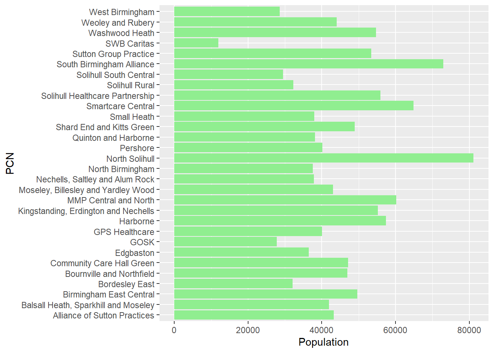
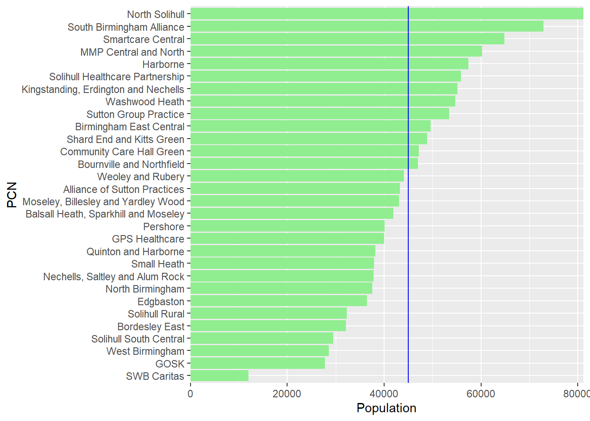

Chapter 6 Creating charts
6.1 ggplot2
The ggplot2 package, part of the tidyverse collection, is the most popular package in R to create charts.
The below dataset of BSOL PCN populations (derived from NHS Digital - Patients Registered at a GP Practice dataset) is used in the following examples.
6.2 Bar chart
ggplot(
pcn, # data
aes(PCN, Population) # x + y values
) +
geom_col(fill = "lightgreen") +
coord_flip()
The ggplot function begins the chart - this takes the dataset and the variables to be plotted on the x + y axis. The x + y variables have to be wrapped within the aes (aesthetic) function.
Please note that because ggplot2 was one of the first designed tidyverse packages, it does not currently operate with the pipe. Instead it uses the + sign, which works in a similar fashion to the pipe.
To specify the type of chart, a geom_ function is required - geom_col in this case. Use the fill argument to change the colour of the columns - by default it will be grey.
As there are a large number of PCN labels for the x-axis, the labels will overlap. Therefore the coord_flip() function is used to flip PCN to the x-axis and enable the labels to be readable.
6.3 Chart customisation
ggplot(
pcn,
aes(
reorder(PCN, Population), # order PCN by population
Population
)
) +
geom_col(fill = "lightgreen") +
coord_flip() +
xlab("PCN") + # rename PCN axis
scale_y_continuous(expand = c(0, 0)) # remove spaceggplot2 allows significant chart customisation, the above code includes a few examples:
Use the reorder function when the x + y variables are called to order the columns.
Use the xlab or ylab functions to rename each axis. When the reorder function is used, the axis will be renamed reorder(x,y) - the xlab function allows this to be corrected.
Use the code scale_y_continuous(expand = c(0,0)) to remove the space between the PCN labels and the columns.
6.4 Combining chart elements
average_pop <- mean(pcn$Population)
ggplot(
pcn,
aes(
reorder(PCN, Population),
Population
)
) +
geom_col(fill = "lightgreen") +
coord_flip() +
xlab("PCN") +
geom_hline(yintercept = average_pop, color = "blue") + # avg population
scale_y_continuous(expand = c(0, 0)) 
Multiple elements can be added to the chart. The above code adds a benchmark line to indicate average PCN population.
The average population can be derived and then passed through to the geom_hline function to indicate the PCN average.
6.5 Interactive charts
library(plotly)
ggplotly(
ggplot(
pcn,
aes(
reorder(PCN, Population),
Population,
text = paste0( # customisable tooltip using html
"PCN: ", PCN,
"<br>",
"Population: ", Population,
"<br>",
Group
)
)
) +
geom_col(fill = "lightgreen") +
coord_flip() +
xlab("PCN") +
geom_hline(yintercept = average_pop, color = "blue") +
scale_y_continuous(expand = c(0, 0)),
tooltip = "text" # ensures tooltip is changed
) %>% config(displayModeBar = F)The plotly package converts ggplot2 plots to interactive charts. Simply wrap the existing ggplot2 code in the ggplotly function.
To edit the tooltip, edit the text argument within the aes() function. This can take html for formatting. Ensure tooltip = “text” is included at the end of the ggplotly function.
To turn off the option buttons created by plotly, use %>% config(displayModeBar = F).